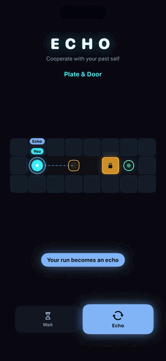
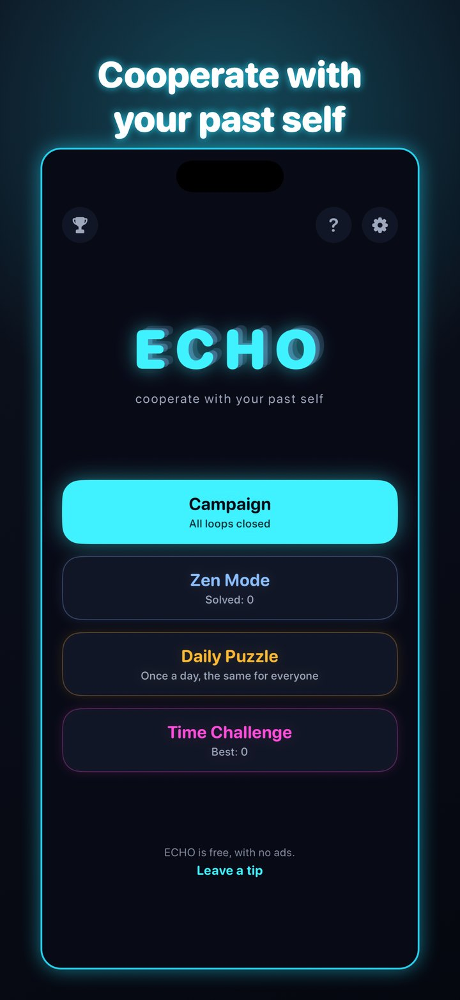
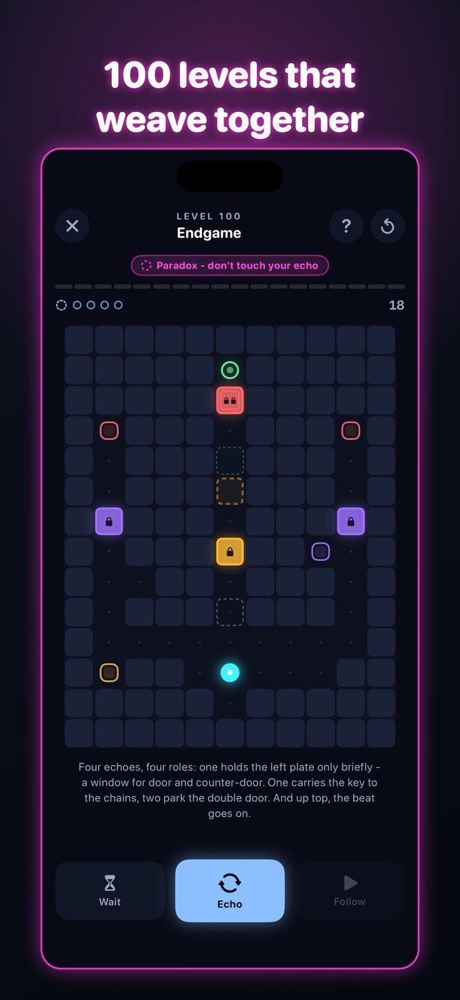
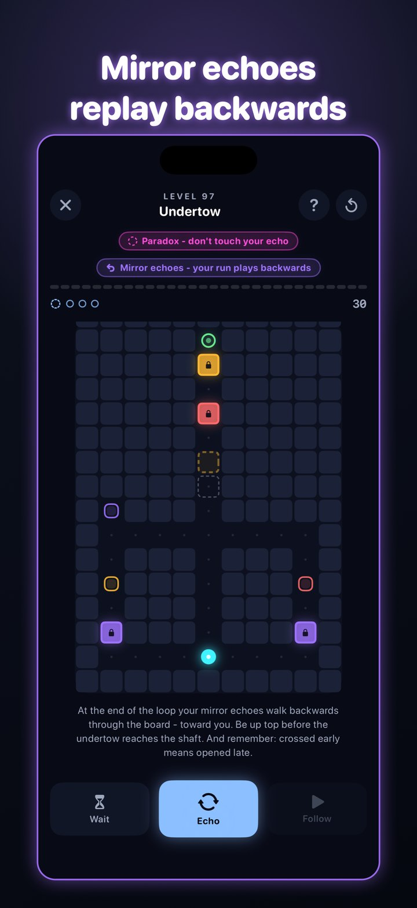
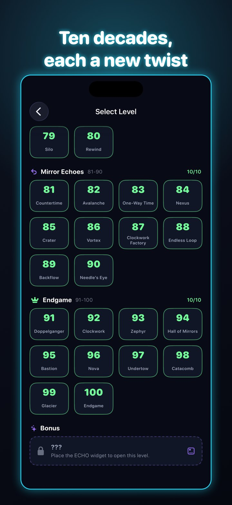
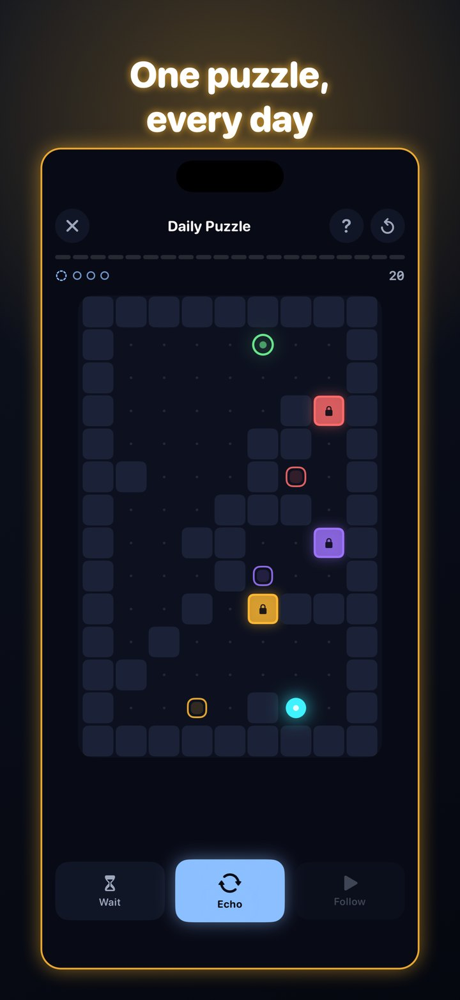
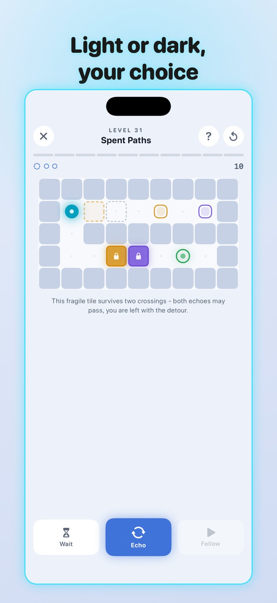

Out now on the App Store — current version 1.0.1.

Download assets (screenshots EN + DE, GIF, logo - ZIP, 21 MB)
App Store: apps.apple.com/app/id6791749935
Press contact: Lucas Hesseldieck - business@earlsstudio.com
Gameplay video: full App Preview (25 s, EN + DE, 886×1920) available on request.
Click for full resolution. Free to use in coverage of the game, credit "earls studio".






Copy-paste-ready texts. Do not edit ad hoc for individual outlets — if a text needs a variant, add it here so everything stays consistent.
ECHO is a time-loop logic puzzle for iPhone. Every run is recorded — press ECHO and your past self replays it in every loop, holding plates and opening doors you could never pass alone. 100 levels, a daily puzzle, Zen mode. Free, fully offline, no ads, no tracking.
ECHO is built on one dilemma: a door only stays open while a pressure plate of the same colour is held down — and you cannot stand on the plate and walk through the door at the same time. The solution is the ECHO button. It ends your run and turns it into a past self that replays your exact steps in every following loop, including every pause. You hold doors open for yourself, march in lockstep with your own echo through closing time windows, and solve puzzles no single person could.
The 100-level campaign introduces a new twist every ten levels and blends it with everything before: dashed doors that stay open only while their plate is free, double doors that need every plate of their colour at once, crumbling floors that even echo runs wear down, and paradox levels where touching your own echo is forbidden. Beyond the campaign there is an endless procedurally generated Zen mode with beat walls pulsing to the loop's rhythm, a three-minute time challenge, and a daily puzzle that is identical for every player worldwide — with streaks and a home-screen widget.
ECHO is deliberately quiet technology: fully offline, no account, no ads, no tracking, seven languages, Game Center leaderboards and achievements, iCloud sync. The ambient soundtrack is synthesized live on the device, so no two sessions sound the same. The game is completely free; the only purchases are optional tips that unlock nothing. ECHO is the second game from earls studio, the one-person Munich studio behind the puzzle game Odd One (July 2026).
| Name | ECHO – Time Loop Puzzle (German store: „ECHO – Zeitschleifen-Rätsel") |
| Tagline | Cooperate with your past self (German App Store subtitle: „Dein altes Ich spielt mit") |
| Developer | earls studio (Lucas Hesseldieck), Munich, Germany |
| Platform | iPhone, iOS 17 or later |
| Release | August 2026 — out now worldwide. Current version 1.0.1 (7 August 2026) |
| Size | 3 MB |
| Price | Free — no ads, no tracking, no account; optional tip jar that unlocks nothing |
| Modes | Campaign (100 levels, 10 decades), Zen (endless, procedural), Daily puzzle (identical worldwide, streaks, widget), Time Challenge (3 minutes) |
| Mechanics | Echo runs of your past self, pressure plates & doors, dashed doors, double doors, crumbling floors, paradox levels, beat walls |
| Languages | English, German, French, Italian, Dutch, Polish, Czech |
| Features | Fully offline, live-synthesized soundtrack, home-screen widget, Game Center (leaderboards + 10 achievements), iCloud sync, light & dark mode |
| Category / Rating | Games › Puzzle, rated 4+ |
| App Store | https://apps.apple.com/app/id6791749935 |
| Press contact | Lucas Hesseldieck, business@earlsstudio.com |
| Website | https://earls-studio.github.io/echo/ |
earls studio is a one-person game studio from Munich, founded in 2026 by Lucas Hesseldieck. It makes small, calm, carefully finished games. Odd One (July 2026) and ECHO (August 2026) are free of ads and tracking and financed by optional tips; the third game, Blink Grid (August 2026), is free-to-play with non-personalised ads and optional purchases.
Copy-paste-fertige Texte. Bitte nicht pro Anfrage spontan umformulieren — wenn eine Variante gebraucht wird, hier ergänzen, damit alles konsistent bleibt.
ECHO ist ein Zeitschleifen-Logikpuzzle fürs iPhone. Jeder Lauf wird aufgezeichnet — drück ECHO, und dein vergangenes Ich wiederholt ihn in jeder Schleife, hält Platten und öffnet Türen, durch die du allein nie kämst. 100 Level, Tagesrätsel, Zen-Modus. Gratis, komplett offline, keine Werbung, kein Tracking.
ECHO baut auf einem Dilemma auf: Eine Tür bleibt nur offen, solange eine Druckplatte derselben Farbe gehalten wird — aber du kannst nicht gleichzeitig auf der Platte stehen und durch die Tür gehen. Die Lösung ist die ECHO-Taste. Sie beendet deinen Lauf und macht ihn zu einem vergangenen Ich, das ihn in jeder folgenden Schleife exakt wiederholt, inklusive jeder Pause. Du hältst dir selbst Türen auf, marschierst im Gleichschritt mit deinem eigenen Echo durch schließende Zeitfenster und löst Rätsel, die eine Person allein nie lösen könnte.
Die 100-Level-Kampagne führt alle zehn Level einen neuen Kniff ein und verschmilzt ihn mit allem Vorherigen: gestrichelte Türen, die nur offen sind, solange ihre Platte frei ist, Doppel-Türen, die alle Platten ihrer Farbe gleichzeitig brauchen, brüchige Böden, die auch Echo-Läufe dauerhaft abnutzen, und Paradox-Level, in denen du dein eigenes Echo nie berühren darfst. Daneben gibt es einen endlosen, prozedural generierten Zen-Modus mit Takt-Wänden im Rhythmus der Schleife, eine Drei-Minuten-Zeit-Challenge und ein Tagesrätsel, das weltweit für alle Spieler identisch ist — mit Serien-Zähler und Home-Screen-Widget.
ECHO ist bewusst leise Technik: komplett offline, kein Konto, keine Werbung, kein Tracking, sieben Sprachen, Game-Center-Ranglisten und -Erfolge, iCloud-Sync. Die Ambient-Musik wird live auf dem Gerät synthetisiert — keine Sitzung klingt gleich. Das Spiel ist vollständig kostenlos; die einzigen Käufe sind freiwillige Trinkgelder, die nichts freischalten. ECHO ist das zweite Spiel von earls studio, dem Ein-Personen-Studio aus München hinter dem Rätselspiel Odd One (Juli 2026).
| Name | ECHO – Zeitschleifen-Rätsel (englischer Store: "ECHO – Time Loop Puzzle") |
| Tagline | Kooperiere mit deinem vergangenen Ich (Store-Untertitel: „Dein altes Ich spielt mit") |
| Entwickler | earls studio (Lucas Hesseldieck), München |
| Plattform | iPhone, ab iOS 17 |
| Release | August 2026 — weltweit erhältlich. Aktuelle Version 1.0.1 (7. August 2026) |
| Größe | 3 MB |
| Preis | Kostenlos — keine Werbung, kein Tracking, kein Konto; freiwilliges Trinkgeld, das nichts freischaltet |
| Modi | Kampagne (100 Level, 10 Dekaden), Zen (endlos, prozedural), Tagesrätsel (weltweit identisch, Serien, Widget), Zeit-Challenge (3 Minuten) |
| Mechaniken | Echo-Läufe des vergangenen Ichs, Druckplatten & Türen, gestrichelte Türen, Doppel-Türen, Rissböden, Paradox-Level, Takt-Wände |
| Sprachen | Deutsch, Englisch, Französisch, Italienisch, Niederländisch, Polnisch, Tschechisch |
| Features | Komplett offline, live synthetisierte Musik, Home-Screen-Widget, Game Center (Ranglisten + 10 Erfolge), iCloud-Sync, heller & dunkler Modus |
| Kategorie / Altersfreigabe | Spiele › Rätsel, freigegeben ab 4 Jahren |
| App Store | https://apps.apple.com/app/id6791749935 |
| Presse-Kontakt | Lucas Hesseldieck, business@earlsstudio.com |
| Website | https://earls-studio.github.io/echo/ |
earls studio ist ein Ein-Personen-Spielestudio aus München, gegründet 2026 von Lucas Hesseldieck. Es macht kleine, ruhige, sorgfältig fertiggestellte Spiele. Odd One (Juli 2026) und ECHO (August 2026) sind frei von Werbung und Tracking und über freiwillige Trinkgelder finanziert; das dritte Spiel, Blink Grid (August 2026), ist Free-to-play mit nicht-personalisierter Werbung und optionalen Käufen.